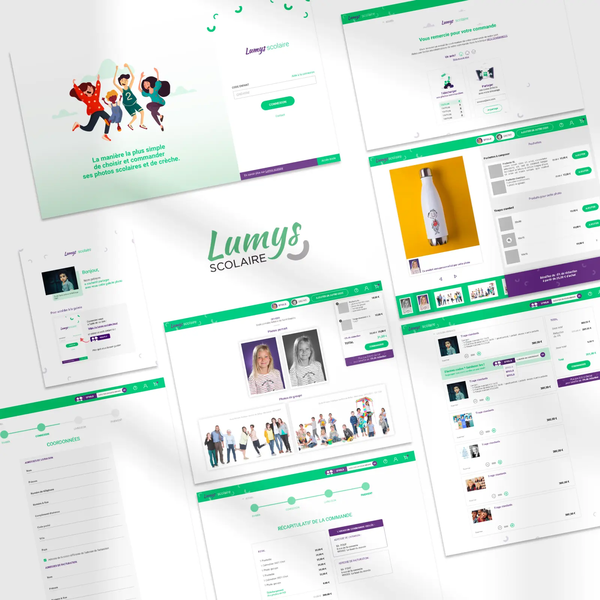
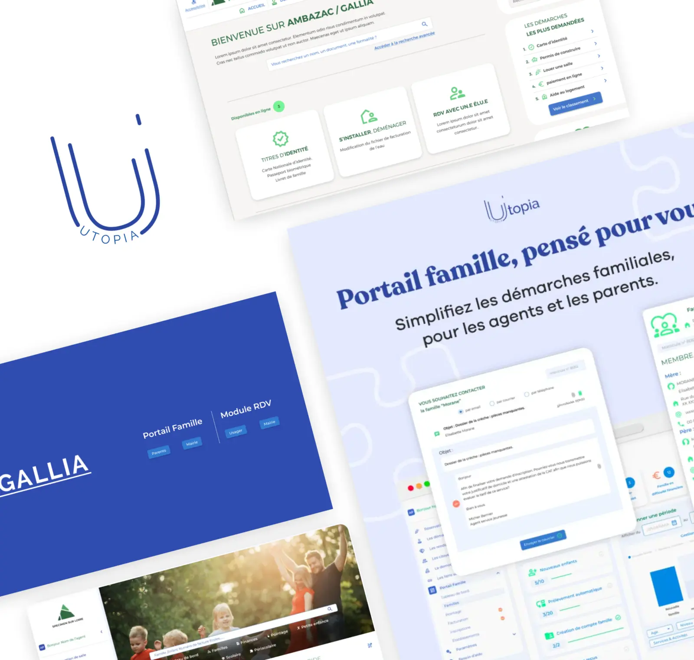
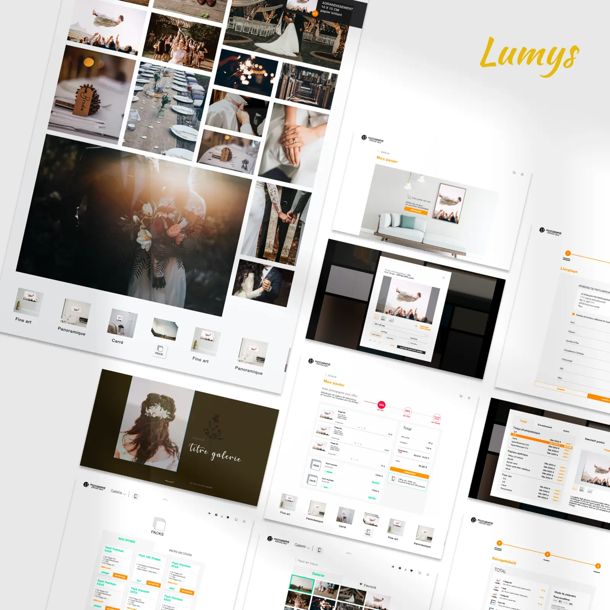
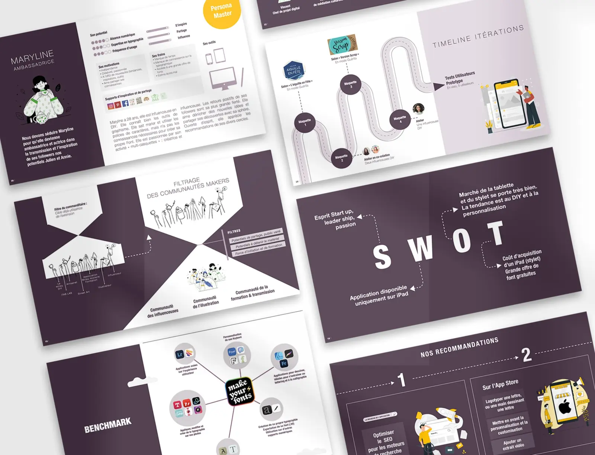

Lumys Scolaire
Une plateforme destinée aux professionnels de la photographie scolaire.
Des démarches familiales au parcours d’achat, chaque projet demande de comprendre ses utilisateurs, son écosystème et ses objectifs.

Gallia centralise des informations et démarches liées aux services proposés aux familles. Mon travail portait sur le portail famille, en complément de la partie mairie conçue par un autre designer. Nous intervenions au même niveau de responsabilité sur deux périmètres distincts, en veillant à maintenir une expérience cohérente.

Ma mission portait exclusivement sur les sessions destinées aux clients. L’objectif était de rendre le parcours d’achat plus simple, rassurant et engageant.

Une plateforme destinée aux professionnels de la photographie scolaire.

Une exploration de produit menée dans le cadre de ma formation aux Gobelins.
Comprendre le contexte, identifier les contraintes, structurer les parcours, concevoir avec les équipes puis améliorer.